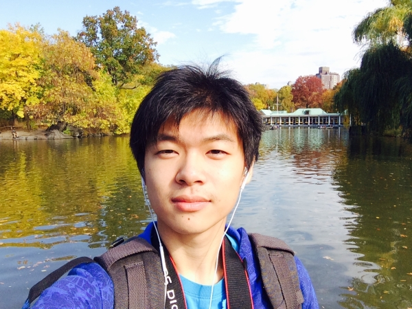

Team
Our Group

Dylan Hutchison -- Team Leader
Dylan Hutchison majors in Computer Engineering and he is the Leader of HBaaS Project. He is very passionate on the project and he wants the project to be successful. Dylan is talented and very good at Java programming and Database, so he takes care of the database part of the project. He is the one who puts all the information we need into database and helps other to handler their job. Dylan is a good leader too because he could always helps others out and lead them in a right way.
Eric Cherin -- Accumulo Expert
Eric is an electrical engineer who has passions on the big data. He is talented on leanring and applying programming skill on the current project. Eric plays an important role in our team because he takes care of our core Technology -- Accumulo and JNI. Eric is concise but clear.
Xin Li -- Web Programmer
Xin Li is a computer engineer who can do good on website programming. His job is to build the front end of the project for users. He also helps Dylan set up the meeting schedule and organize the personal meeting between each member. The front end is the minor part but still important to the whole project.
Hefel Yang -- Web Specialist
Hefei Yang majors in Electrical Engineering and he would like to work more on the hardware. Since the project is fully software for right now, Hefei helps Xin do some website design and learn some Java from Eric Cherin. He will work more on the documentations.

Di Ren -- Web Server Specialist
Di Ren is a computer scientist. His job is mainly on the web server. He is going to work with Xin first to determine how front end connects to the server and then work with Eric to determine how the web server connects to Accmulo. His position is really crucial because he has to take care of both. He is actually the one who determines that we use Java as programming language.
Dr. Narayan Ganesan -- Advisor
Dr. Narayan Ganesan is the advisor of HBaaS Project. He is the assitant professor of Electrical and Computer Engineering Department. His research interests include Heterogeneous Computing and Mathematical Modeling. Heterogeneous computing devices(GPUs, FPGAs, multicore systems and distributed systems) offer tremendous advantages in terms of handling problems with widely different characteristics and computational requirements. Powerful mathematical modeling techniques combined with diverse computing architecture systems greatly enable us to study problems with high fidelity and unprecedented precision.
Xuelian Liu -- GPU Sepcialist
Xuelian Liu is a graduate student who has co-project with HBaaS. She mainly deals with GPU part. Once the whole pipeline could work on the virtual server, it is considered to load into GPU.
Hanyu Jiang -- GPU Technique Support
Hanyu is a PH.D student major in Computer Science. He also has the co-project with us. He is extremely helpful. He knows how the entire project works in detail and he actually does programmming for connecting Accumulo and Database. He also knows how could we implement our proejct on GPU
Mojie Yao -- FGPA Specialist
Yao comes with Xuelian since they have the same project on their own. Yao knows a lot about FGPA which is also a way of implementing our project. Yao also helps design our project Logo and he did a really good job